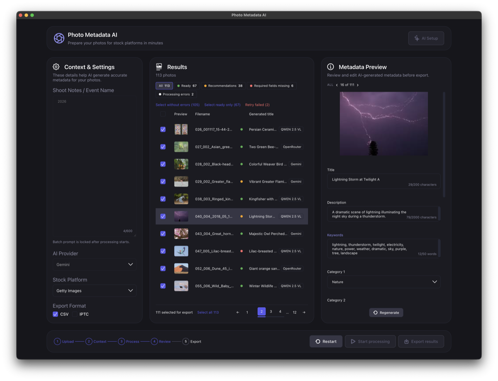

Adobe Stock
70 знаков в title · до 49 ключевых слов · одна категория
В CSV — AI Disclosure
Десктопное приложение анализирует каждый кадр с помощью AI и генерирует полный набор полей, которых требуют стоки — от заголовка и ключевых слов до лицензии, локации, editorial-блока и релизов. Под требования каждой площадки они пересобираются автоматически, вшиваются в файлы и выгружаются в CSV.
DMG ~230 МБ · без регистрации и подписки — нужен ключ AI-провайдера или локальная модель.
Возможности
Добавляйте сотни JPEG одной пачкой, следите за прогрессом и при необходимости останавливайте.
При таймауте, лимите или ошибке запрос уйдёт к следующей доступной модели — локальной или облачной.
Перезапускайте файлы с ошибками, перегенерируйте один кадр или правьте отдельное поле вручную.
Метаданные
Один кадр превращается в полный набор для стока — от описания до editorial и IPTC.
Маппинг
Выберите площадку — приложение пересоберёт метаданные без повторного запуска AI.
70 знаков в title · до 49 ключевых слов · одна категория
В CSV — AI Disclosure
200 знаков в title · до 50 ключевых слов · две категории
В CSV — лицензия и editorial-дата
2048 знаков в title · до 50 ключевых слов · две категории
Предупреждение после 150 знаков; флаги Illustration и Mature Content
Автоматически: лимиты, словари категорий, лицензии и колонки CSV. Автофикс исправляет формальные ошибки и сохраняет ручные правки.
Как работает
Линейный сценарий без скрытых настроек: на каждом шаге видно, что уже сделано и что осталось.
Перетащите JPEG-файлы в окно или выберите их в диалоге.
Заметки о съёмке, AI-провайдер, сток и формат экспорта.
Генерация полей без привязки к площадке.
Поля пересобраны под выбранный сток — остаётся проверить.
CSV и копии фотографий с метаданными — в папку результатов.
Скриншоты
Снято на macOS, сборка Photo Metadata AI 1.1.0-universal.

Поле Keywords здесь отредактировано вручную — его подпись подсвечена, так что всегда видно, что правил человек, а что сгенерировал AI.
Посмотреть все 15 экрановПриватность
.app и переживают переустановку.
Установка
Скачанный .dmg монтируется двойным щелчком.
Перенесите «Photo Metadata AI.app» в папку программ.
Подключите локальную модель и/или введите ключи облачных провайдеров.
Требуется macOS 11 или новее. Работает и на Apple Silicon, и на Intel.
brew install ollama
ollama serve
ollama pull qwen2.5vl| Backend | Python 3.11+, FastAPI, Uvicorn, Pydantic, aiohttp, httpx, Pillow, structlog, iptcinfo3, uv, Ruff, pytest |
|---|---|
| Frontend | React 18, TypeScript, Zustand, Sass, axios, react-scripts, Jest и Testing Library |
| Desktop | Electron 33, electron-builder, PyInstaller (universal2), Jest |
Electron запускает бинарник бэкенда, FastAPI раздаёт собранный React-фронтенд — один origin, без CORS.
Перед установкой
Приложение подписано ad-hoc и не нотарифицировано, поэтому Gatekeeper показывает предупреждение. Откройте «Photo Metadata AI.app» правым щелчком → «Открыть» и подтвердите — дальше приложение запускается обычным двойным щелчком.
Локальная Ollama с моделью Qwen2.5-VL или ключ Google Gemini либо OpenRouter — достаточно одного варианта.
JPEG — их же приложение отдаёт на выходе, с метаданными внутри копий. Съёмочный EXIF при этом сохраняется, оригиналы остаются нетронутыми.
Приложение показывает баннер, когда вышла новая версия; загрузка и установка
ручные — скачайте новый .dmg и замените приложение.
Загрузите файлы, проверьте сгенерированные поля и выгрузите готовый пакет для стока.